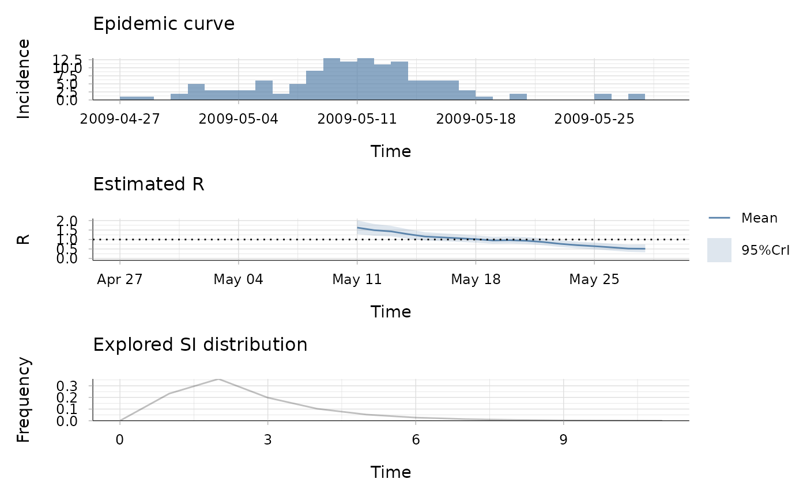
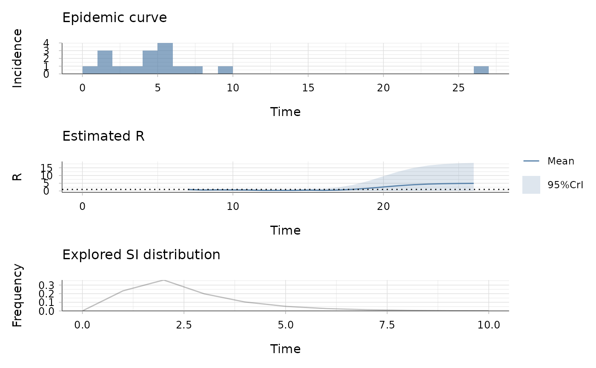
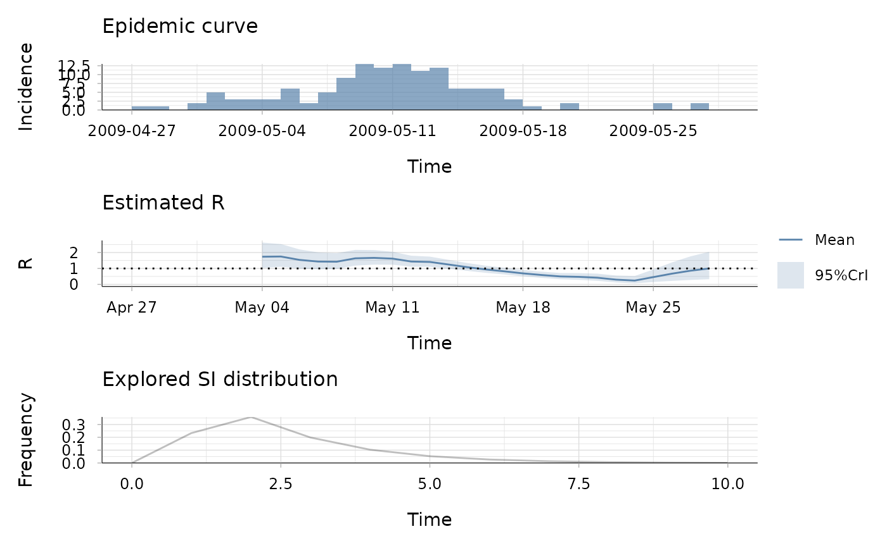
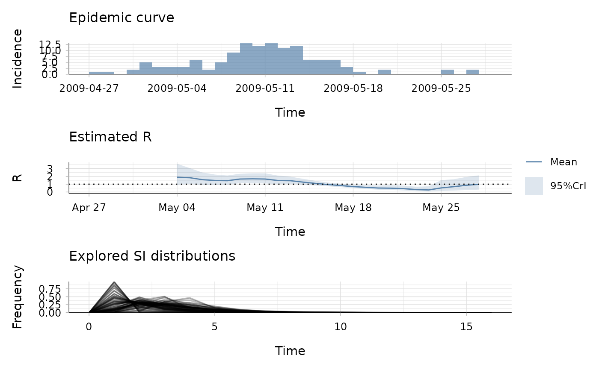
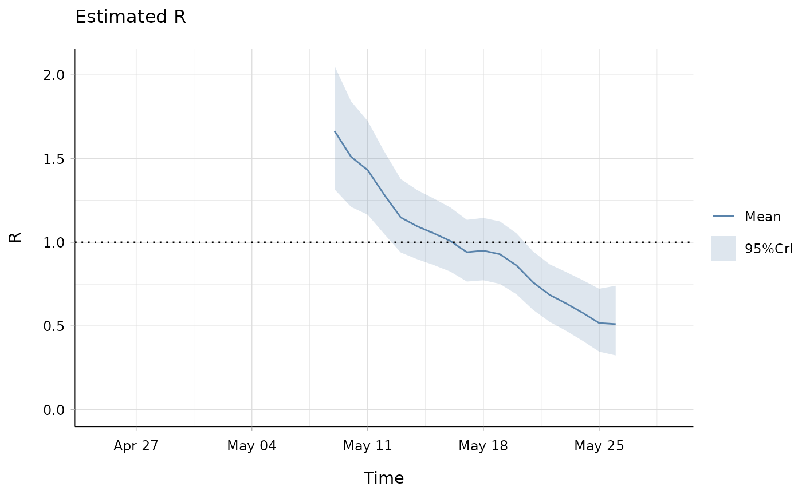

Estimate the instantaneous reproduction number of an epidemic, given the incidence time series and the serial interval distribution.
Usage
estimate_R(
incid,
method = c("non_parametric_si", "parametric_si", "uncertain_si", "si_from_data",
"si_from_sample"),
si_data = NULL,
si_sample = NULL,
config = make_config(incid = incid),
dt = 1L,
dt_out = 7L,
recon_opt = "naive",
iter = 10L,
tol = 1e-06,
grid = list(precision = 0.001, min = -1, max = 1),
backimputation_window = 0,
date_convention = NULL
)Arguments
- incid
One of the following
A vector (or a dataframe with a single column) of non-negative integers containing the incidence time series; these can be aggregated at any time unit as specified by argument
dtA dataframe of non-negative integers with either i)
incid$Icontaining the total incidence, or ii) two columns, so thatincid$localcontains the incidence of cases due to local transmission andincid$importedcontains the incidence of imported cases (withincid$local + incid$importedthe total incidence). If the dataframe contains a columnincid$dates, this is used for plotting.incid$datesmust contains only dates in a row.An object of class
incidence::incidence()
Note that the cases from the first time step are always all assumed to be imported cases.
- method
One of "non_parametric_si", "parametric_si", "uncertain_si", "si_from_data" or "si_from_sample" (see details).
- si_data
For method "si_from_data"; the data on dates of symptoms of pairs of infector/infected individuals to be used to estimate the serial interval distribution should be a dataframe with 5 columns:
EL: the lower bound of the symptom onset date of the infector (given as an integer)
ER: the upper bound of the symptom onset date of the infector (given as an integer). Should be such that ER>=EL. If the dates are known exactly use ER = EL
SL: the lower bound of the symptom onset date of the infected individual (given as an integer)
SR: the upper bound of the symptom onset date of the infected individual (given as an integer). Should be such that SR >= SL. If the dates are known exactly use SR = SL
type (optional): can have entries 0, 1, or 2, corresponding to doubly interval-censored, single interval-censored or exact observations, respectively, see Reich et al. Statist. Med. 2009. If not specified, this will be automatically computed from the dates
- si_sample
For method "si_from_sample"; a matrix where each column gives one distribution of the serial interval to be explored (see details).
- config
An object of class
estimate_R_config, as returned bymake_config().- dt
length of temporal aggregations of the incidence data. This should be an integer or vector of integers. If a vector, this can either match the length of the incidence data supplied, or it will be recycled. For example,
dt = c(3L, 4L)would correspond to alternating incidence aggregation windows of 3 and 4 days. The default value is 1 time unit (typically day).- dt_out
length of the sliding windows used for R estimates (integer, 7 time units (typically days) by default). Only used if
dt > 1; in this case this will supersedeconfig$t_startandconfig$t_end, seeestimate_R_agg().- recon_opt
one of "naive" or "match", see
estimate_R_agg().- iter
number of iterations of the EM algorithm used to reconstruct incidence at 1-time-unit intervals(integer, 10 by default). Only used if
dt > 1, seeestimate_R_agg().- tol
tolerance used in the convergence check (numeric, 1e-6 by default), see
estimate_R_agg().- grid
named list containing "precision", "min", and "max" which are used to define a grid of growth rate parameters that are used inside the EM algorithm used to reconstruct incidence at 1-time-unit intervals. Only used if
dt > 1, seeestimate_R_agg().- backimputation_window
Length of the window used to impute incidence prior to the first reported cases. The default value is 0, meaning that no back-imputation is performed. If a positive integer is provided, the incidence is imputed for the first
backimputation_windowtime units.- date_convention
One of
"start"or"end", specifying whether the dates supplied inincid$datescorrespond to the first or last day of each aggregation window. Must be specified if incidence are temporally aggregated (dt > 1) andincid$datesis supplied. For example, for weekly epi-week data where the date label corresponds to the first day of the week (e.g. Monday), use"start". For data reported multiple times per week where the date corresponds to the reporting date (i.e. the last day of the accumulation window), use"end". Ignored if no dates are supplied.
Value
an object of class estimate_R, with components:
R: a dataframe containing: the times of start and end of each time window considered ; the posterior mean, std, and 0.025, 0.05, 0.25, 0.5, 0.75, 0.95, 0.975 quantiles of the reproduction number for each time window.method: the method used to estimate R, one of "non_parametric_si", "parametric_si", "uncertain_si", "si_from_data" or "si_from_sample"si_distr: a vector or dataframe (depending on the method) containing the discrete serial interval distribution(s) used for estimationSI.Moments: a vector or dataframe (depending on the method) containing the mean and std of the discrete serial interval distribution(s) used for estimationI: the time series of total incidenceI_local: the time series of incidence of local cases (so thatI_local + I_imported = I)I_imported: the time series of incidence of imported cases (so thatI_local + I_imported = I)I_imputed: the time series of incidence of imputed casesdates: a vector of dates corresponding to the incidence time seriesMCMC_converged(only for methodsi_from_data): a boolean showing whether the Gelman-Rubin MCMC convergence diagnostic was successful (TRUE) or not (FALSE)
Details
Analytical estimates of the reproduction number for an epidemic over predefined time windows can be obtained within a Bayesian framework, for a given discrete distribution of the serial interval (see references).
Several methods are available to specify the serial interval distribution.
In short there are five methods to specify the serial interval distribution
(see help for function make_config() for more detail on each method).
In the first two methods, a unique serial interval distribution is
considered, whereas in the last three, a range of serial interval
distributions are integrated over:
In method "non_parametric_si" the user specifies the discrete distribution of the serial interval
In method "parametric_si" the user specifies the mean and sd of the serial interval
In method "uncertain_si" the mean and sd of the serial interval are each drawn from truncated normal distributions, with parameters specified by the user
In method "si_from_data", the serial interval distribution is directly estimated, using MCMC, from interval censored exposure data, with data provided by the user together with a choice of parametric distribution for the serial interval
In method "si_from_sample", the user directly provides the sample of serial interval distribution to use for estimation of R. This can be a useful alternative to the previous method, where the MCMC estimation of the serial interval distribution could be run once, and the same estimated SI distribution then used in estimate_R in different contexts, e.g. with different time windows, hence avoiding to rerun the MCMC every time estimate_R is called.
R is estimated within a Bayesian framework, using a Gamma distributed prior,
with mean and standard deviation which can be set using the mean_prior
and std_prior arguments within the make_config() function, which can then
be used to specify config in the estimate_R() function.
Default values are a mean prior of 5 and standard deviation of 5.
This was set to a high prior value with large uncertainty so that if one
estimates R to be below 1, the result is strongly data-driven.
R is estimated on time windows specified through the config argument.
These can be overlapping or not (see make_config() function and vignette
for examples).
References
Cori, A. et al. A new framework and software to estimate time-varying reproduction numbers during epidemics (AJE 2013).
Wallinga, J. and P. Teunis. Different epidemic curves for severe acute respiratory syndrome reveal similar impacts of control measures (AJE 2004). Reich, N.G. et al. Estimating incubation period distributions with coarse data (Statis. Med. 2009)
See also
make_config()for general settings of the estimationdiscr_si()to build serial interval distributionssample_posterior_R()to draw samples of R values from the posterior distribution from the output ofestimate_R()
Examples
## load data on pandemic flu in a school in 2009
data("Flu2009")
## estimate the reproduction number (method "non_parametric_si")
## when not specifying t_start and t_end in config, they are set to estimate
## the reproduction number on sliding weekly windows
res <- estimate_R(incid = Flu2009$incidence,
method = "non_parametric_si",
config = make_config(list(si_distr = Flu2009$si_distr)))
#> Default config will estimate R on weekly sliding windows.
#> To change this change the t_start and t_end arguments.
plot(res)
## the second plot produced shows, at each each day,
## the estimate of the reproduction number over the 7-day window
## finishing on that day.
## to specify t_start and t_end in config, e.g. to have biweekly sliding
## windows
t_start <- seq(2, nrow(Flu2009$incidence) - 13)
t_end <- t_start + 13
res <- estimate_R(incid = Flu2009$incidence,
method = "non_parametric_si",
config = make_config(list(
si_distr = Flu2009$si_distr,
t_start = t_start,
t_end = t_end)))
plot(res)

## the second plot produced shows, at each each day,
## the estimate of the reproduction number over the 14-day window
## finishing on that day.
## example with an incidence object
## create fake data
library(incidence)
data <- c(0, 1, 1, 2, 1, 3, 4, 5, 5, 5, 5, 4, 4, 26, 6, 7, 9)
location <- sample(c("local","imported"), length(data), replace = TRUE)
location[1] <- "imported" # forcing the first case to be imported
## get incidence per group (location)
incid <- incidence(data, groups = location)
## Estimate R with assumptions on serial interval
res <- estimate_R(incid, method = "parametric_si",
config = make_config(list(
mean_si = 2.6, std_si = 1.5)))
#> Default config will estimate R on weekly sliding windows.
#> To change this change the t_start and t_end arguments.
plot(res)

## the second plot produced shows, at each each day,
## the estimate of the reproduction number over the 7-day window
## finishing on that day.
## estimate the reproduction number (method "parametric_si")
res <- estimate_R(Flu2009$incidence, method = "parametric_si",
config = make_config(list(mean_si = 2.6, std_si = 1.5)))
#> Default config will estimate R on weekly sliding windows.
#> To change this change the t_start and t_end arguments.
plot(res)

## the second plot produced shows, at each each day,
## the estimate of the reproduction number over the 7-day window
## finishing on that day.
## estimate the reproduction number (method "uncertain_si")
res <- estimate_R(Flu2009$incidence, method = "uncertain_si",
config = make_config(list(
mean_si = 2.6, std_mean_si = 1,
min_mean_si = 1, max_mean_si = 4.2,
std_si = 1.5, std_std_si = 0.5,
min_std_si = 0.5, max_std_si = 2.5,
n1 = 100, n2 = 100)))
#> Default config will estimate R on weekly sliding windows.
#> To change this change the t_start and t_end arguments.
plot(res)

## the bottom left plot produced shows, at each each day,
## the estimate of the reproduction number over the 7-day window
## finishing on that day.
## Example with back-imputation:
## here we use the first 6 days of incidence to impute cases that preceded
## the first reported cases:
res_bi <- estimate_R(
incid = Flu2009$incidence,
method = "parametric_si",
backimputation_window = 6,
config = make_config(list(
mean_si = 2.6,
std_si = 1,
t_start = t_start,
t_end = t_end
))
)
plot(res_bi, "R")

## We can see that early estimates of R are lower when back-imputation is
## used, even though the difference is marginal in this case.
if (FALSE) { # \dontrun{
## Note the following examples use an MCMC routine
## to estimate the serial interval distribution from data,
## so they may take a few minutes to run
## load data on rotavirus
data("MockRotavirus")
mcmc_control <- make_mcmc_control(
burnin = 1000, # first 1000 iterations discarded as burn-in
thin = 10, # every 10th iteration will be kept, the rest discarded
seed = 1 # set the seed to make the process reproducible
)
R_si_from_data <- estimate_R(
incid = MockRotavirus$incidence,
method = "si_from_data",
si_data = MockRotavirus$si_data, # symptom onset data
config = make_config(
si_parametric_distr = "G", # gamma dist. for SI
mcmc_control = mcmc_control,
n1 = 500, # number of posterior samples of SI dist.
n2 = 50, # number of posterior samples of Rt dist.
seed = 2
) # set seed for reproducibility
)
## compare with version with no uncertainty
R_Parametric <- estimate_R(MockRotavirus$incidence,
method = "parametric_si",
config = make_config(list(
mean_si = mean(R_si_from_data$SI.Moments$Mean),
std_si = mean(R_si_from_data$SI.Moments$Std))))
## generate plots
library(patchwork) # To arrange side-by-side
p_uncertainty <- plot(R_si_from_data, "R", options_R=list(ylim=c(0, 1.5)))
p_no_uncertainty <- plot(R_Parametric, "R", options_R=list(ylim=c(0, 1.5)))
p_uncertainty + p_no_uncertainty
## the left hand side graph is with uncertainty in the SI distribution, the
## right hand side without.
## The credible intervals are wider when accounting for uncertainty in the SI
## distribution.
## estimate the reproduction number (method "si_from_sample")
MCMC_seed <- 1
overall_seed <- 2
SI.fit <- coarseDataTools::dic.fit.mcmc(dat = MockRotavirus$si_data,
dist = "G",
init.pars = init_mcmc_params(MockRotavirus$si_data, "G"),
burnin = 1000,
n.samples = 5000,
seed = MCMC_seed)
si_sample <- coarse2estim(SI.fit, thin = 10)$si_sample
R_si_from_sample <- estimate_R(MockRotavirus$incidence,
method = "si_from_sample",
si_sample = si_sample,
config = make_config(list(n2 = 50,
seed = overall_seed)))
plot(R_si_from_sample)
## check that R_si_from_sample is the same as R_si_from_data
## since they were generated using the same MCMC algorithm to generate the SI
## sample (either internally to EpiEstim or externally)
all(R_si_from_sample$R$`Mean(R)` == R_si_from_data$R$`Mean(R)`)
} # }